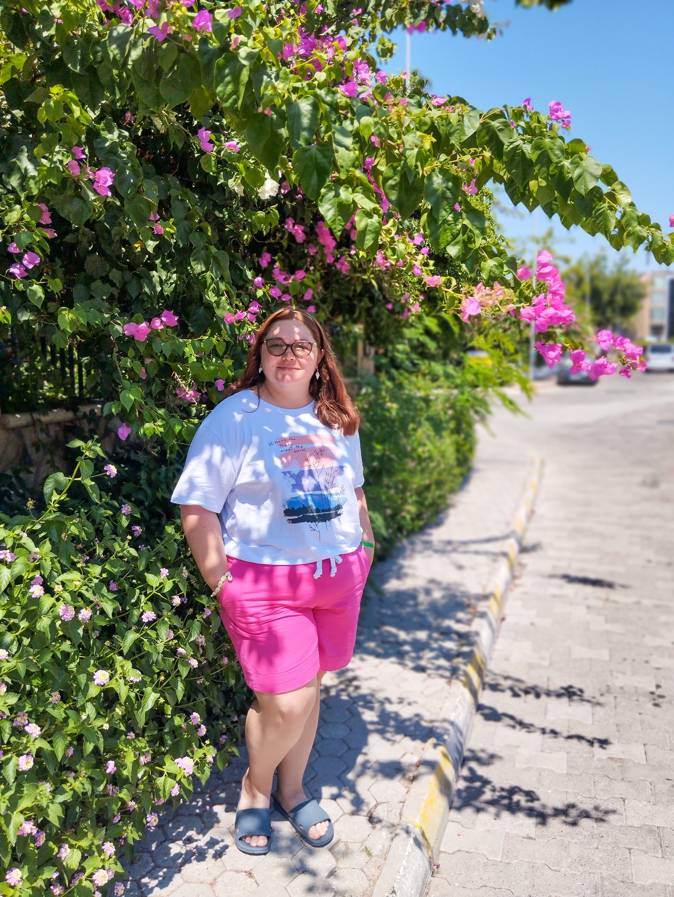

Здесь собраны наши договорённости: что взять, что держать при себе, как устроен перелёт и на что обратить внимание в отеле.

Туда и обратно разные авиакомпании, поэтому и лимиты багажа разные. Особенно внимательно собираемся туда: чемодан — только 10 кг.
Российский + загран. Оба держим при себе и не сдаём в багаж.
Всё ценное должно быть в ручной клади. Туда же кладём минимум, с которым можно спокойно прожить день, если багаж задержится.
Крем, головной убор и возможность закрыть плечи — не «на всякий случай», а нормальная часть отдыха.
Цель — чтобы при задержке чемодана у нас были документы, ценное и вещи на первые сутки.
В ручную кладь берём жидкости в маленьких ёмкостях до 100 мл. У нас есть мини-тюбики шампуня и геля для душа — можно взять сразу на двоих.
Полноразмерные флаконы можно положить в багаж, но лучше упаковать их отдельно: всегда есть риск, что что-то протечёт.
Солнцезащитный крем, скорее всего, удобнее везти в багаже — нужен нормальный объём, особенно если ты собираешься много загорать.
Перевозить препараты можно только в заводской упаковке. Не стоит пересыпать таблетки в сторонние контейнеры, потому что сотрудникам аэропорта будет сложнее определить, что именно везёт с собой пассажир.
Иногда могут попросить показать рецепт или справку от врача. Обычно это нужно, если берёшь много упаковок одного и того же препарата, медикаменты с наркотическими или психотропными веществами или рецептурные средства.
Туда можно упаковать ножницы, пилочку, бритвенный станок и всё, что острое. Туда же упаковывать солнцезащитный крем и всё, что упаковано в бутылочки.
На коленях ручную кладь держать не стоит; во время руления, взлёта и посадки её попросят убрать на багажную полку или под кресло впереди.
Наверх в полёте лазить неудобно, а под кресло — доступнее, но там и так мало места для ног.
Когда сели, сразу достать то, что понадобится в полёте: телефон, наушники и воду. Это можно положить в карман впереди стоящего кресла, а сумку убрать.
Летим почти 5 часов. Сейчас исходим из того, что на Azur Air бесплатного питания не будет, поэтому лучше взять перекус с собой. Ближе к вылету ещё раз проверим условия рейса.
Удобно: небольшие сэндвичи или роллы, орехи, батончики, сухофрукты, печенье или крекеры. Лучше то, что можно есть поштучно, что не течёт, не сильно крошится и не пахнет на весь салон.
Действуем по шагам: паспортный контроль → получение багажа → стойка FUN&SUN → автобус → ресепшен.
Едем до Чамьювы. Трансфер может занять время, потому что автобус развозит туристов по нескольким отелям. В отеле идём на ресепшен и даём загранпаспорта для заселения.